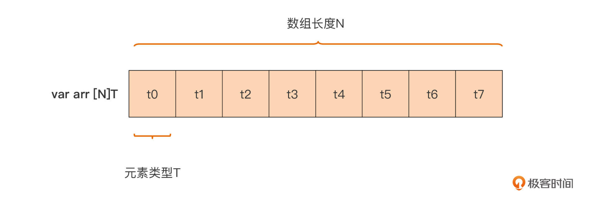
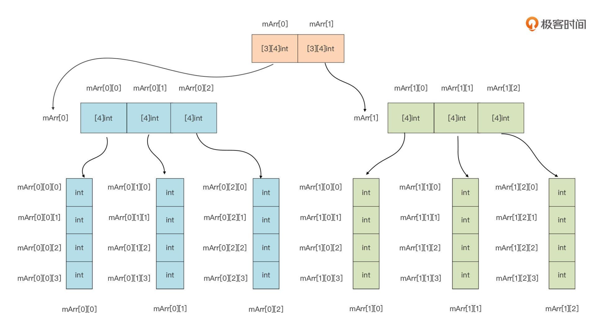
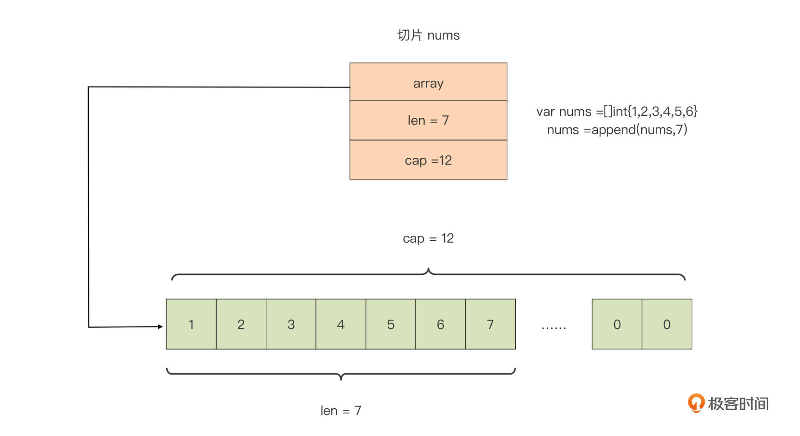
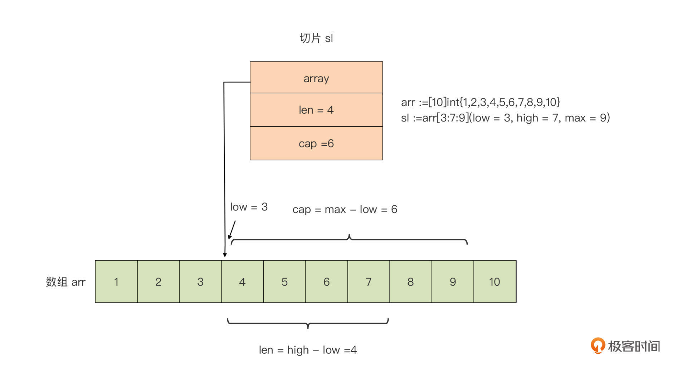
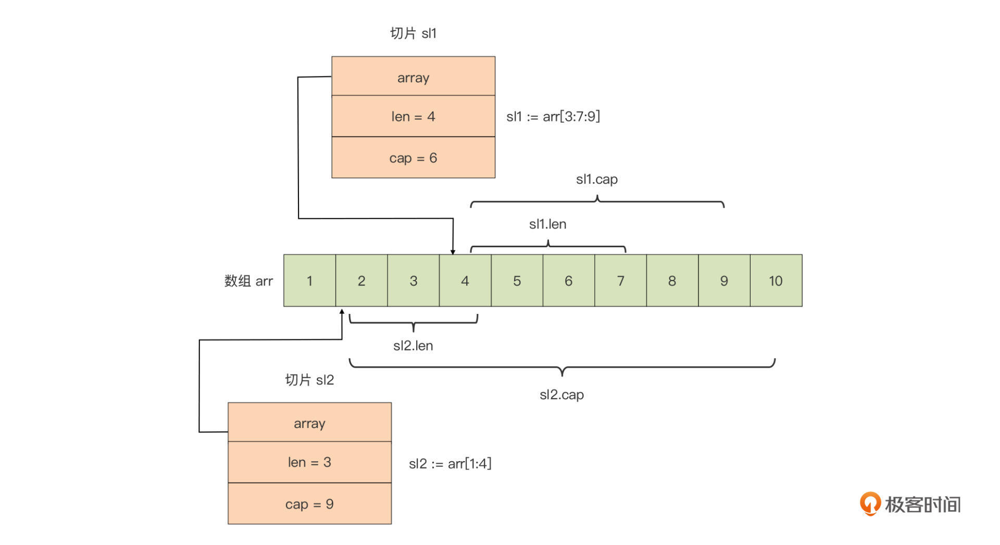

- 00 开篇词 这样入门Go，才能少走弯路.md.html
- 01 前世今生：你不得不了解的Go的历史和现状.md.html
- 02 拒绝“Hello and Bye”：Go语言的设计哲学是怎么一回事？.md.html
- 03 配好环境：选择一种最适合你的Go安装方法.md.html
- 04 初窥门径：一个Go程序的结构是怎样的？.md.html
- 05 标准先行：Go项目的布局标准是什么？.md.html
- 06 构建模式：Go是怎么解决包依赖管理问题的？.md.html
- 07 构建模式：Go Module的6类常规操作.md.html
- 08 入口函数与包初始化：搞清Go程序的执行次序.md.html
- 09 即学即练：构建一个Web服务就是这么简单.md.html
- 10 变量声明：静态语言有别于动态语言的重要特征.md.html
- 11 代码块与作用域：如何保证变量不会被遮蔽？.md.html
- 12 基本数据类型：Go原生支持的数值类型有哪些？.md.html
- 13 基本数据类型：为什么Go要原生支持字符串类型？.md.html
- 14 常量：Go在“常量”设计上的创新有哪些？.md.html
- 15 同构复合类型：从定长数组到变长切片.md.html
- 16 复合数据类型：原生map类型的实现机制是怎样的？.md.html
- 17 复合数据类型：用结构体建立对真实世界的抽象.md.html
- 18 控制结构：if的“快乐路径”原则.md.html
- 19 控制结构：Go的for循环，仅此一种.md.html
- 20 控制结构：Go中的switch语句有哪些变化？.md.html
- 21 函数：请叫我“一等公民”.md.html
- 22 函数：怎么结合多返回值进行错误处理？.md.html
- 23 函数：怎么让函数更简洁健壮？.md.html
- 24 方法：理解“方法”的本质.md.html
- 25 方法：方法集合与如何选择receiver类型？.md.html
- 26 方法：如何用类型嵌入模拟实现“继承”？.md.html
- 27 即学即练：跟踪函数调用链，理解代码更直观.md.html
- 28 接口：接口即契约.md.html
- 29 接口：为什么nil接口不等于nil？.md.html
- 30 接口：Go中最强大的魔法.md.html
- 31 并发：Go的并发方案实现方案是怎样的？.md.html
- 32 并发：聊聊Goroutine调度器的原理.md.html
- 33 并发：小channel中蕴含大智慧.md.html
- 34 并发：如何使用共享变量？.md.html
- 35 即学即练：如何实现一个轻量级线程池？.md.html
- 36 打稳根基：怎么实现一个TCP服务器？（上）.md.html
- 37 代码操练：怎么实现一个TCP服务器？（中）.md.html
- 38 成果优化：怎么实现一个TCP服务器？（下）.md.html
- 39 驯服泛型：了解类型参数.md.html
- 40 驯服泛型：定义泛型约束.md.html
- 41 驯服泛型：明确使用时机.md.html
- 元旦快乐 这是一份暂时停更的声明.md.html
- 加餐 作为Go Module的作者，你应该知道的几件事.md.html
- 加餐 如何拉取私有的Go Module？.md.html
- 加餐 我“私藏”的那些优质且权威的Go语言学习资料.md.html
- 加餐 聊聊Go 1.17版本的那些新特性.md.html
- 加餐 聊聊Go语言的指针.md.html
- 加餐 聊聊最近大热的Go泛型.md.html
- 大咖助阵 叶剑峰：Go语言中常用的那些代码优化点.md.html
- 大咖助阵 大明：Go泛型，泛了，但没有完全泛.md.html
- 大咖助阵 孔令飞：从小白到“老鸟”，我的Go语言进阶之路.md.html
- 大咖助阵 徐祥曦：从销售到分布式存储工程师，我与 Go 的故事.md.html
- 大咖助阵 曹春晖：聊聊 Go 语言的 GC 实现.md.html
- 大咖助阵 海纳：聊聊语言中的类型系统与泛型.md.html
- 期中测试 一起检验下你的学习成果吧.md.html
- 用户故事 罗杰：我的Go语言学习之路.md.html
- 结束语 和你一起迎接Go的黄金十年.md.html
- 结课测试 快来检验下你的学习成果吧！.md.html
- 捐赠
15 同构复合类型：从定长数组到变长切片
你好，我是Tony Bai。
在前面的学习中，我们详细讲解了Go基本数据类型，主要包括数值类型与字符串类型。但是，仅仅学习这些基本数据类型建立的抽象概念，还远不足以让我们应对真实世界的各种问题。
比如，我们要表示一组数量固定且连续的整型数，建立一个能表示书籍的抽象数据类型，这个类型中包含书名、页数、出版信息等；又或者，我们要建立一个学号与学生姓名的映射表等。这些问题基本数据类型都无法解决，所以我们需要一类新类型来建立这些抽象，丰富Go语言的表现力。
这种新类型是怎么样的呢？我们可以通过这些例子总结出新类型的一个特点，那就是它们都是由多个同构类型（相同类型）或异构类型（不同类型）的元素的值组合而成的。这类数据类型在Go语言中被称为复合类型。
从这一节课开始，我们就来讲解Go语言的复合类型。Go语言原生内置了多种复合数据类型，包括数组、切片（slice）、map、结构体，以及像channel这类用于并发程序设计的高级复合数据类型。那么这一节课，我们先来学习一下最简单的复合类型：数组，以及与数组有着密切关系的切片。
下面我们就先从最基础的复合数据类型，数组开始。
数组有哪些基本特性？
我们先来看数组类型的概念。Go语言的数组是一个长度固定的、由同构类型元素组成的连续序列。通过这个定义，我们可以识别出Go的数组类型包含两个重要属性：元素的类型和数组长度（元素的个数）。这两个属性也直接构成了Go语言中数组类型变量的声明：
var arr [N]T
这里我们声明了一个数组变量arr，它的类型为[N]T，其中元素的类型为T，数组的长度为N。这里，我们要注意，数组元素的类型可以为任意的Go原生类型或自定义类型，而且数组的长度必须在声明数组变量时提供，Go编译器需要在编译阶段就知道数组类型的长度，所以，我们只能用整型数字面值或常量表达式作为N值。
通过这句代码我们也可以看到，如果两个数组类型的元素类型T与数组长度N都是一样的，那么这两个数组类型是等价的，如果有一个属性不同，它们就是两个不同的数组类型。下面这个示例很好地诠释了这一点：
func foo(arr [5]int) {}
func main() {
var arr1 [5]int
var arr2 [6]int
var arr3 [5]string
foo(arr1) // ok
foo(arr2) // 错误：[6]int与函数foo参数的类型[5]int不是同一数组类型
foo(arr3) // 错误：[5]string与函数foo参数的类型[5]int不是同一数组类型
}
在这段代码里，arr2与arr3两个变量的类型分别为[6]int和 [5]string，前者的长度属性与[5]int不一致，后者的元素类型属性与[5]int不一致，因此这两个变量都不能作为调用函数foo时的实际参数。
了解了数组类型的逻辑定义后，我们再来看看数组类型在内存中的实际表示是怎样的，这是数组区别于其他类型，也是我们区分不同数组类型的根本依据。
数组类型不仅是逻辑上的连续序列，而且在实际内存分配时也占据着一整块内存。Go编译器在为数组类型的变量实际分配内存时，会为Go数组分配一整块、可以容纳它所有元素的连续内存，如下图所示：

我们从这个数组类型的内存表示中可以看出来，这块内存全部空间都被用来表示数组元素，所以说这块内存的大小，就等于各个数组元素的大小之和。如果两个数组所分配的内存大小不同，那么它们肯定是不同的数组类型。Go提供了预定义函数len可以用于获取一个数组类型变量的长度，通过unsafe包提供的Sizeof函数，我们可以获得一个数组变量的总大小，如下面代码：
var arr = [6]int{1, 2, 3, 4, 5, 6}
fmt.Println("数组长度：", len(arr)) // 6
fmt.Println("数组大小：", unsafe.Sizeof(arr)) // 48
数组大小就是所有元素的大小之和，这里数组元素的类型为int。在64位平台上，int类型的大小为8，数组arr一共有6个元素，因此它的总大小为6x8=48个字节。
和基本数据类型一样，我们声明一个数组类型变量的同时，也可以显式地对它进行初始化。如果不进行显式初始化，那么数组中的元素值就是它类型的零值。比如下面的数组类型变量arr1的各个元素值都为0：
var arr1 [6]int // [0 0 0 0 0 0]
如果要显式地对数组初始化，我们需要在右值中显式放置数组类型，并通过大括号的方式给各个元素赋值（如下面代码中的arr2）。当然，我们也可以忽略掉右值初始化表达式中数组类型的长度，用“…”替代，Go编译器会根据数组元素的个数，自动计算出数组长度（如下面代码中的arr3）：
var arr2 = [6]int {
11, 12, 13, 14, 15, 16,
} // [11 12 13 14 15 16]
var arr3 = [...]int {
21, 22, 23,
} // [21 22 23]
fmt.Printf("%T\n", arr3) // [3]int
但如果我们要对一个长度较大的稀疏数组进行显式初始化，这样逐一赋值就太麻烦了，还有什么更好的方法吗？我们可以通过使用下标赋值的方式对它进行初始化，比如下面代码中的arr4：
var arr4 = [...]int{
99: 39, // 将第100个元素(下标值为99)的值赋值为39，其余元素值均为0
}
fmt.Printf("%T\n", arr4) // [100]int
通过数组类型变量以及下标值，我们可以很容易地访问到数组中的元素值，并且这种访问是十分高效的，不存在Go运行时带来的额外开销。但你要记住，数组的下标值是从0开始的。如果下标值超出数组长度范畴，或者是负数，那么Go编译器会给出错误提示，防止访问溢出：
var arr = [6]int{11, 12, 13, 14, 15, 16}
fmt.Println(arr[0], arr[5]) // 11 16
fmt.Println(arr[-1]) // 错误：下标值不能为负数
fmt.Println(arr[8]) // 错误：小标值超出了arr的长度范围
多维数组怎么解？
上面这些元素类型为非数组类型的数组的都是简单的一维数组，但Go语言中，其实还有更复杂的数组类型，多维数组。也就是说，数组类型自身也可以作为数组元素的类型，这样就会产生多维数组，比如下面的变量mArr的类型就是一个多维数组[2] [3][4]int：
var mArr [2][3][4]int
多维数组也不难理解，我们以上面示例中的多维数组类型为例，我们从左向右逐维地去看，这样我们就可以将一个多维数组分层拆解成这样：

我们从上向下看，首先我们将mArr这个数组看成是一个拥有两个元素，且元素类型都为[3] [4]int的数组，就像图中最上层画的那样。这样，mArr的两个元素分别为mArr[0]和mArr [1]，它们的类型均为[3] [4]int，也就是说它们都是二维数组。
而以mArr[0]为例，我们可以将其看成一个拥有3个元素且元素类型为[4]int的数组，也就是图中中间层画的那样。这样mArr[0]的三个元素分别为mArr[0][0]、mArr[0][1]以及mArr[0][2]，它们的类型均为[4]int，也就是说它们都是一维数组。
图中的最后一层就是mArr[0]的三个元素，以及mArr[1]的三个元素的各自展开形式。以此类推，你会发现，无论多维数组究竟有多少维，我们都可以将它从左到右逐一展开，最终化为我们熟悉的一维数组。
不过，虽然数组类型是Go语言中最基础的复合数据类型，但是在使用中它也会有一些问题。数组类型变量是一个整体，这就意味着一个数组变量表示的是整个数组。这点与C语言完全不同，在C语言中，数组变量可视为指向数组第一个元素的指针。这样一来，无论是参与迭代，还是作为实际参数传给一个函数/方法，Go传递数组的方式都是纯粹的值拷贝，这会带来较大的内存拷贝开销。
这时，你可能会想到我们可以使用指针的方式，来向函数传递数组。没错，这样做的确可以避免性能损耗，但这更像是C语言的惯用法。其实，Go语言为我们提供了一种更为灵活、更为地道的方式 ，切片，来解决这个问题。它的优秀特性让它成为了Go 语言中最常用的同构复合类型。
切片是怎么一回事？
我们前面提到过，数组作为最基本同构类型在Go语言中被保留了下来，但数组在使用上确有两点不足：固定的元素个数，以及传值机制下导致的开销较大。于是Go设计者们又引入了另外一种同构复合类型：切片（slice），来弥补数组的这两处不足。
切片和数组就像两个一母同胞的亲兄弟，长得像，但又各有各的行为特点。我们可以先声明并初始化一个切片变量看看：
var nums = []int{1, 2, 3, 4, 5, 6}
我们看到与数组声明相比，切片声明仅仅是少了一个“长度”属性。去掉“长度”这一束缚后，切片展现出更为灵活的特性，这些特性我们后面再分析。
虽然不需要像数组那样在声明时指定长度，但切片也有自己的长度，只不过这个长度不是固定的，而是随着切片中元素个数的变化而变化的。我们可以通过len函数获得切片类型变量的长度，比如上面那个切片变量的长度就是6:
fmt.Println(len(nums)) // 6
而且，通过Go内置函数append，我们可以动态地向切片中添加元素。当然，添加后切片的长度也就随之发生了变化，如下面代码所示：
nums = append(nums, 7) // 切片变为[1 2 3 4 5 6 7]
fmt.Println(len(nums)) // 7
到这里，我想你已经初步了解切片类型的一些基础信息了。我们前面也说，相比数组类型，切片展现了更为灵活的特性，这些特性是怎么样的呢？现在我们深入它的实现原理看看。
Go是如何实现切片类型的？
Go切片在运行时其实是一个三元组结构，它在Go运行时中的表示如下：
type slice struct {
array unsafe.Pointer
len int
cap int
}
我们可以看到，每个切片包含三个字段：
- array: 是指向底层数组的指针；
- len: 是切片的长度，即切片中当前元素的个数；
- cap: 是底层数组的长度，也是切片的最大容量，cap值永远大于等于len值。
如果我们用这个三元组结构表示切片类型变量nums，会是这样：

我们看到，Go编译器会自动为每个新创建的切片，建立一个底层数组，默认底层数组的长度与切片初始元素个数相同。我们还可以用以下几种方法创建切片，并指定它底层数组的长度。
方法一：通过make函数来创建切片，并指定底层数组的长度。我们直接看下面这行代码：
sl := make([]byte, 6, 10) // 其中10为cap值，即底层数组长度，6为切片的初始长度
如果没有在make中指定cap参数，那么底层数组长度cap就等于len，比如：
sl := make([]byte, 6) // cap = len = 6
到这里，你肯定会有一个问题，为什么上面图中nums切片的底层数组长度为12，而不是初始的len值6呢？你可以先自己思考一下，我们在后面再细讲。
方法二：采用array[low : high : max]语法基于一个已存在的数组创建切片。这种方式被称为数组的切片化，比如下面代码：
arr := [10]int{1, 2, 3, 4, 5, 6, 7, 8, 9, 10}
sl := arr[3:7:9]
我们基于数组arr创建了一个切片sl，这个切片sl在运行时中的表示是这样：

我们看到，基于数组创建的切片，它的起始元素从low所标识的下标值开始，切片的长度（len）是high - low，它的容量是max - low。而且，由于切片sl的底层数组就是数组arr，对切片sl中元素的修改将直接影响数组arr变量。比如，如果我们将切片的第一个元素加10，那么数组arr的第四个元素将变为14：
sl[0] += 10
fmt.Println("arr[3] =", arr[3]) // 14
这样看来，切片好比打开了一个访问与修改数组的“窗口”，通过这个窗口，我们可以直接操作底层数组中的部分元素。这有些类似于我们操作文件之前打开的“文件描述符”（Windows上称为句柄），通过文件描述符我们可以对底层的真实文件进行相关操作。可以说，切片之于数组就像是文件描述符之于文件。
在Go语言中，数组更多是“退居幕后”，承担的是底层存储空间的角色。切片就是数组的“描述符”，也正是因为这一特性，切片才能在函数参数传递时避免较大性能开销。因为我们传递的并不是数组本身，而是数组的“描述符”，而这个描述符的大小是固定的（见上面的三元组结构），无论底层的数组有多大，切片打开的“窗口”长度有多长，它都是不变的。此外，我们在进行数组切片化的时候，通常省略max，而max的默认值为数组的长度。
另外，针对一个已存在的数组，我们还可以建立多个操作数组的切片，这些切片共享同一底层数组，切片对底层数组的操作也同样会反映到其他切片中。下面是为数组arr建立的两个切片的内存表示：

我们看到，上图中的两个切片sl1和sl2是数组arr的“描述符”，这样的情况下，无论我们通过哪个切片对数组进行的修改操作，都会反映到另一个切片中。比如，将sl2[2]置为14，那么sl1[0]也会变成14，因为sl2[2]直接操作的是底层数组arr的第四个元素arr[3]。
方法三：基于切片创建切片。
不过这种切片的运行时表示原理与上面的是一样的，我这里就不多分析了，你可以自己看一下。
最后，我们回答一下前面切片变量nums在进行一次append操作后切片容量变为12的问题。这里我们要清楚一个概念：切片与数组最大的不同，就在于其长度的不定长，这种不定长需要Go运行时提供支持，这种支持就是切片的“动态扩容”。
切片的动态扩容
“动态扩容”指的就是，当我们通过append操作向切片追加数据的时候，如果这时切片的len值和cap值是相等的，也就是说切片底层数组已经没有空闲空间再来存储追加的值了，Go运行时就会对这个切片做扩容操作，来保证切片始终能存储下追加的新值。
前面的切片变量nums之所以可以存储下新追加的值，就是因为Go对其进行了动态扩容，也就是重新分配了其底层数组，从一个长度为6的数组变成了一个长为12的数组。
接下来，我们再通过一个例子来体会一下切片动态扩容的过程：
var s []int
s = append(s, 11)
fmt.Println(len(s), cap(s)) //1 1
s = append(s, 12)
fmt.Println(len(s), cap(s)) //2 2
s = append(s, 13)
fmt.Println(len(s), cap(s)) //3 4
s = append(s, 14)
fmt.Println(len(s), cap(s)) //4 4
s = append(s, 15)
fmt.Println(len(s), cap(s)) //5 8
在这个例子中，我们看到，append会根据切片对底层数组容量的需求，对底层数组进行动态调整。具体我们一步步分析。
最开始，s初值为零值（nil），这个时候s没有“绑定”底层数组。我们先通过append操作向切片s添加一个元素11，这个时候，append会先分配底层数组u1（数组长度1），然后将s内部表示中的array指向u1，并设置len = 1, cap = 1;
接着，我们通过append操作向切片s再添加第二个元素12，这个时候len(s) = 1，cap(s) = 1，append判断底层数组剩余空间已经不能够满足添加新元素的要求了，于是它就创建了一个新的底层数组u2，长度为2（u1数组长度的2倍），并把u1中的元素拷贝到u2中，最后将s内部表示中的array指向u2，并设置len = 2, cap = 2；
然后，第三步，我们通过append操作向切片s添加了第三个元素13，这时len(s) = 2，cap(s) = 2，append判断底层数组剩余空间不能满足添加新元素的要求了，于是又创建了一个新的底层数组u3，长度为4（u2数组长度的2倍），并把u2中的元素拷贝到u3中，最后把s内部表示中的array指向u3，并设置len = 3, cap为u3数组长度，也就是4 ；
第四步，我们依然通过append操作向切片s添加第四个元素14，此时len(s) = 3, cap(s) = 4，append判断底层数组剩余空间可以满足添加新元素的要求，所以就把14放在下一个元素的位置(数组u3末尾），并把s内部表示中的len加1，变为4；
但我们的第五步又通过append操作，向切片s添加最后一个元素15，这时len(s) = 4，cap(s) = 4，append判断底层数组剩余空间又不够了，于是创建了一个新的底层数组u4，长度为8（u3数组长度的2倍），并将u3中的元素拷贝到u4中，最后将s内部表示中的array指向u4，并设置len = 5, cap为u4数组长度，也就是8。
到这里，这个动态扩容的过程就结束了。我们看到，append会根据切片的需要，在当前底层数组容量无法满足的情况下，动态分配新的数组，新数组长度会按一定规律扩展。在上面这段代码中，针对元素是int型的数组，新数组的容量是当前数组的2倍。新数组建立后，append会把旧数组中的数据拷贝到新数组中，之后新数组便成为了切片的底层数组，旧数组会被垃圾回收掉。
不过append操作的这种自动扩容行为，有些时候会给我们开发者带来一些困惑，比如基于一个已有数组建立的切片，一旦追加的数据操作触碰到切片的容量上限（实质上也是数组容量的上界)，切片就会和原数组解除“绑定”，后续对切片的任何修改都不会反映到原数组中了。我们再来看这段代码：
u := [...]int{11, 12, 13, 14, 15}
fmt.Println("array:", u) // [11, 12, 13, 14, 15]
s := u[1:3]
fmt.Printf("slice(len=%d, cap=%d): %v\n", len(s), cap(s), s) // [12, 13]
s = append(s, 24)
fmt.Println("after append 24, array:", u)
fmt.Printf("after append 24, slice(len=%d, cap=%d): %v\n", len(s), cap(s), s)
s = append(s, 25)
fmt.Println("after append 25, array:", u)
fmt.Printf("after append 25, slice(len=%d, cap=%d): %v\n", len(s), cap(s), s)
s = append(s, 26)
fmt.Println("after append 26, array:", u)
fmt.Printf("after append 26, slice(len=%d, cap=%d): %v\n", len(s), cap(s), s)
s[0] = 22
fmt.Println("after reassign 1st elem of slice, array:", u)
fmt.Printf("after reassign 1st elem of slice, slice(len=%d, cap=%d): %v\n", len(s), cap(s), s)
运行这段代码，我们得到这样的结果：
array: [11 12 13 14 15]
slice(len=2, cap=4): [12 13]
after append 24, array: [11 12 13 24 15]
after append 24, slice(len=3, cap=4): [12 13 24]
after append 25, array: [11 12 13 24 25]
after append 25, slice(len=4, cap=4): [12 13 24 25]
after append 26, array: [11 12 13 24 25]
after append 26, slice(len=5, cap=8): [12 13 24 25 26]
after reassign 1st elem of slice, array: [11 12 13 24 25]
after reassign 1st elem of slice, slice(len=5, cap=8): [22 13 24 25 26]
这里，在append 25之后，切片的元素已经触碰到了底层数组u的边界了。然后我们再append 26之后，append发现底层数组已经无法满足append的要求，于是新创建了一个底层数组（数组长度为cap(s)的2倍，即8），并将slice的元素拷贝到新数组中了。
在这之后，我们即便再修改切片的第一个元素值，原数组u的元素也不会发生改变了，因为这个时候切片s与数组u已经解除了“绑定关系”，s已经不再是数组u的“描述符”了。这种因切片的自动扩容而导致的“绑定关系”解除，有时候会成为你实践道路上的一个小陷阱，你一定要注意这一点。
小结
好了，今天的课讲到这里就结束了。这节课，我们讲解了Go语言的另一类常用数据类型，复合数据类型，并挑重点地讲解了其中最常使用的两种同构复合数据类型：数组和切片。
数组是一个固定长度的、由同构类型元素组成的连续序列。这种连续不仅仅是逻辑上的，Go编译器为数组类型变量分配的也是一整块可以容纳其所有元素的连续内存。而且，Go编译器为数组变量的初始化也提供了很多便利。当数组元素的类型也是数组类型时，会出现多维数组。我们只需要按照变量声明从左到右、按维度分层拆解，直到出现一元数组就好了。
但是，Go值传递的机制让数组在各个函数间传递起来比较“笨重”，开销较大，且开销随数组长度的增加而增加。为了解决这个问题，Go引入了切片这一不定长同构数据类型。
切片可以看成是数组的“描述符”，为数组打开了一个访问与修改的“窗口”。切片在Go运行时中被实现为一个“三元组（array, len, cap）”，其中的array是指向底层数组的指针，真正的数据都存储在这个底层数组中；len表示切片的长度；而cap则是切片底层数组的容量。我们可以为一个数组建立多个切片，这些切片由于共享同一个底层数组，因此我们通过任一个切片对数组的修改都会反映到其他切片中。
切片是不定长同构复合类型，这个不定长体现在Go运行时对它提供的动态扩容的支撑。当切片的cap值与len值相等时，如果再向切片追加数据，Go运行时会自动对切片的底层数组进行扩容，追加数据的操作不会失败。
在大多数场合，我们都会使用切片以替代数组，原因之一是切片作为数组“描述符”的轻量性，无论它绑定的底层数组有多大，传递这个切片花费的开销都是恒定可控的；另外一个原因是切片相较于数组指针也是有优势的，切片可以提供比指针更为强大的功能，比如下标访问、边界溢出校验、动态扩容等。而且，指针本身在Go语言中的功能也受到的限制，比如不支持指针算术运算。
思考题
今天的思考题，我想你请描述一下下面这两个切片变量sl1与sl2的差异。期待在留言区看到你的回答。
var sl1 []int
var sl2 = []int{}
欢迎你把这节课分享给更多对Go语言中的复合数据类型感兴趣的朋友。我是Tony Bai ，我们下节课见。
© 2019 - 2023 Liangliang Lee. Powered by gin and hexo-theme-book.